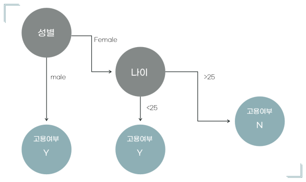
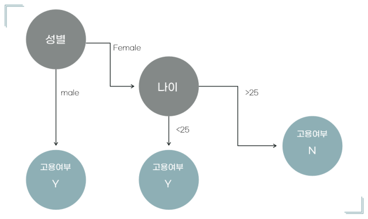

Classification Analysis
 

표의 Column을 참조해 이분법적으로 분류해 node를 결정한다.
이 과정에서 분류된 결과물이 얼마나 명확하게 나뉘었냐를 결정하기 위해서 나뉘어진 node가 반대로 얼마나 불순한가를 나타낸다.
이는 Impurity(Entropy)라고 하며 상위 node의 Entropy에서 하위 node의 Entropy를 뺀 값을 IG(Information Gain)라고 한다.
*이를 계산하기 위한 방법은
Entropy = -Σ P(j/t) log2 P(j/t)
IG가 클수록 모델의 정확도는 상승한다.
Decision Analytic Thinking
모델이 수립되지 않은 경우
1. 이익을 강조하는 방법
고객의 이탈확률이 0.5 이상인 node를 모두 [이탈]로 간주하고 프로모션을 진행
2. 정확성을 강조하는 방법
expected-value값이 0이상일 때의 고객 이탈 확률을 [이탈 node]의 기준으로 잡고 해당 고객에게 프로모션을 진행
모델이 이미 수립된 경우
*confusion_matrix

모델이 이미 수립되었으므로 모델평가 시 expected-value를 사용해 기대수익을 얼마나 내었는지 확인한다.
*여기서 expected-value는 P(확률)*V(비용)의 합
=[ P(Y.P)*V(Y.P) + P(N.P)*V(N.P) + P(N.N)*V(N.N) + P(Y.N)*V(Y.N) ]